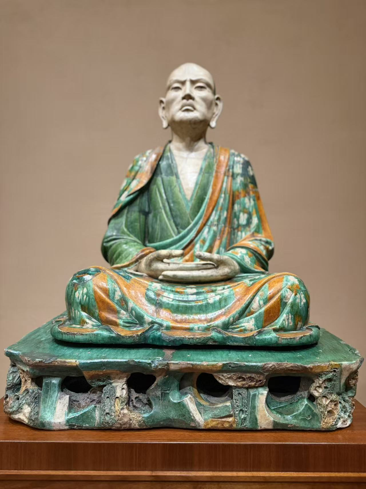
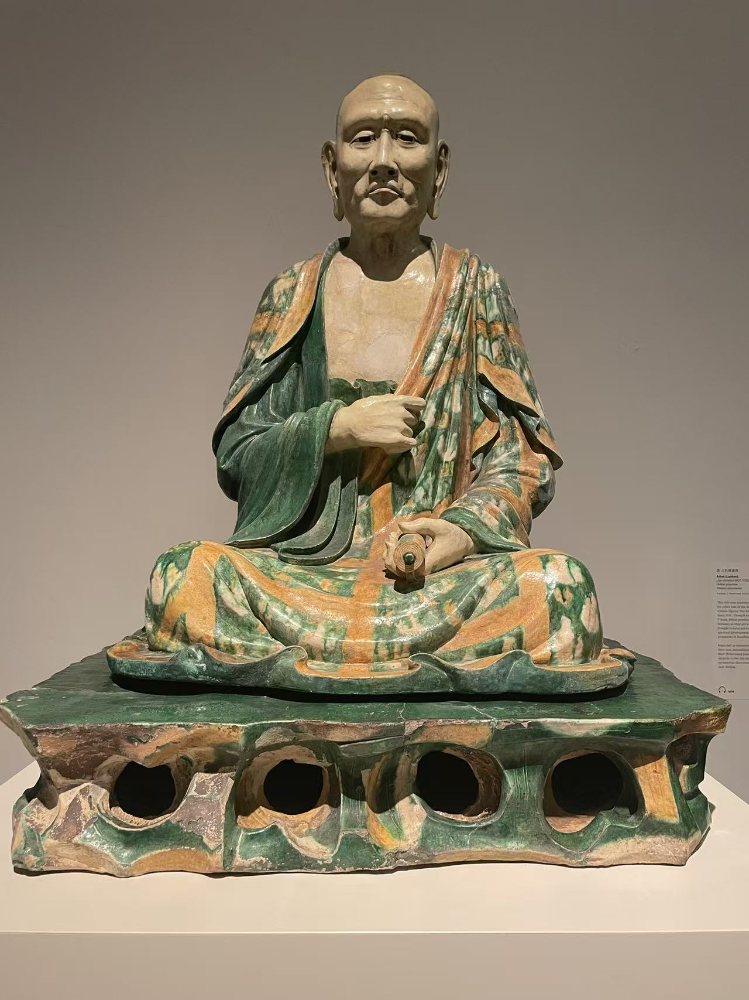
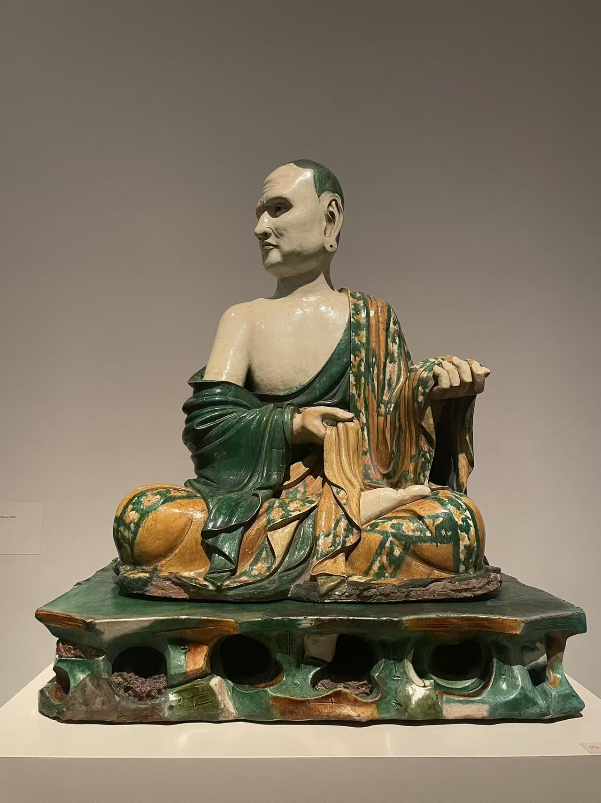
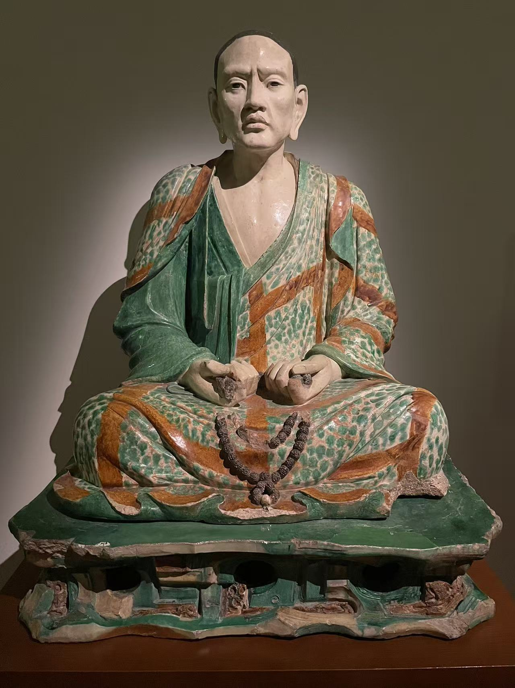

先看四张脸
纳尔逊像双手作禅定姿势，大都会两尊一正一侧，吉美像的双手停在身前。相近的三彩袈裟与岩座，并没有抹平各自的神态。
CHINESE BUDDHIST SCULPTURE
同样的袈裟，不同的面孔。
巴黎、堪萨斯城、纽约。把四尊三彩罗汉放到一起，先看眉眼与手势，再看它们离开原来环境之后的故事。
细看这4件作品 ↓
THE GROUP AND ITS JOURNEY
纳尔逊像双手作禅定姿势，大都会两尊一正一侧，吉美像的双手停在身前。相近的三彩袈裟与岩座，并没有抹平各自的神态。
宾大研究文章回顾了德国人佩尔津斯基在1912年寻访易县洞窟的经历。组像原属的寺院、总数与成员范围，仍有未解之处。
大都会依据北京附近古窑址的发现，采用约1000年的断代；纳尔逊和吉美的记录则给出较宽的辽金范围。
SELECTED WORKS
4 件作品
Luohan
双手叠放在膝前，头略抬起。宽厚的衣褶铺满双腿，岩座的孔洞让沉稳的坐姿多了一层变化。
馆方将其记录为河北易县的辽金时期作品，由威廉·罗克希尔·纳尔逊信托出资购入。现场展签特别指出双手的禅定姿势，以及面部近似肖像的刻画。
基本信息据现场展签整理；照片 © Merton。

Arhat (Luohan)
眉眼和嘴角收得很紧，一只手抬到胸前；衣纹间的绿、黄与乳白釉色，把身体的起伏衬了出来。
这尊像于1921年以 Frederick C. Hewitt Fund 购入。馆方把它与河北易县传出的罗汉组像联系起来，并据北京附近古窑址的考古材料，将年代定在10世纪末至11世纪。
“易县”指传世来源线索，并不等于已经确定原来的寺院或制作窑场。
基本信息据现场展签整理；照片 © Merton。

Arhat (Luohan)
头转向一侧，裸露的肩胸与厚重的袈裟相接；抬起的手与转头的动作，使它和另一尊大都会罗汉很不一样。
大都会以 Fletcher Fund 于1920年购入此像。与另一尊馆藏放在一起看，最直接的差别在头部转向、手势和衣袍覆盖身体的方式。
基本信息据现场展签整理；照片 © Merton。

Arhat Tamrabhadra (?)
面容清瘦，双手停在身前；绿釉袈裟上的斑驳色块，与裸露胸口的浅色形成对照。
现场展签记载，这尊像由香港的徐展堂（T. T. Tsui）于1997年捐赠，并以问号标注“佛陀第六弟子”，具体尊者身份尚不确定。
展签仅标中国东北部，未直接写易县。这尊像通常与易县组像并置讨论，具体组属尚不确定。
基本信息据现场展签整理；照片 © Merton。